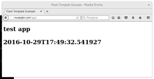

Uma aplicação Flask esquelética
Configurando um servidor nginx para rodar uma aplicação Flask, precisei verificar se a conexão WSGI estava funcionando, e mais que isso, que uma aplicação Flask funcionaria. Para isso adaptei uma aplicação mínima, mas bem compartimentada, apenas com esse objetivo.

Este artigo é para ajudar administradores de sistema que estejam configurando e testando um servidor de aplicação, e não para ajudar desenvolvedores que queiram saber como usar o Flask.
Estrutura geral
A base desse esqueleto e das configurações, veio de um tutorial que encontrei via google:
https://www.digitalocean.com/community/tutorials/how-to-structure-large-flask-applications
Nota:
A aplicação está disponível em https://github.com/paulohrpinheiro/flask-esqueletico. Aqui reproduzo o conteúdo de cada arquivo apenas para ilustrá-los.
Minha estrutura ficou assim:
flask-esqueletico
├── app
│ ├── __init__.py
│ ├── mod_root
│ │ ├── controllers.py
│ │ └── __init__.py
│ └── templates
│ └── mod_root
│ └── index.html
├── config.py
├── requirements.txt
└── run.py
Preparando o terreno
Primeiro baixamos a aplicação em algum diretório e entramos no diretório criado pelo git clone:
$ cd /tmp
$ git clone https://github.com/paulohrpinheiro/flask-esqueletico
$ cd flask-esqueletico
Agora criamos uma virtualenv para conter um ambiente Python exclusivo para nosso projeto:
$ virtualenv /tmp/env-flask-esqueletico
New python executable in /tmp/env-flask-esqueletico/bin/python2
Also creating executable in /tmp/env-flask-esqueletico/bin/python
Installing setuptools, pip, wheel...done.
$
Ativamos a virtualenv:
$ source /tmp/env-flask-esqueletico/bin/activate
(env-flask-esqueletico) $
E instalamos oo módulos necessários:
$ pip install -r requirements.txt
Collecting flask (from -r requirements.txt (line 1))
Using cached Flask-0.11.1-py2.py3-none-any.whl
Collecting uwsgi (from -r requirements.txt (line 2))
Collecting itsdangerous>=0.21 (from flask->-r requirements.txt (line 1))
Collecting click>=2.0 (from flask->-r requirements.txt (line 1))
Collecting Jinja2>=2.4 (from flask->-r requirements.txt (line 1))
Using cached Jinja2-2.8-py2.py3-none-any.whl
Collecting Werkzeug>=0.7 (from flask->-r requirements.txt (line 1))
Using cached Werkzeug-0.11.11-py2.py3-none-any.whl
Collecting MarkupSafe (from Jinja2>=2.4->flask->-r requirements.txt (line 1))
Installing collected packages: itsdangerous, click, MarkupSafe, Jinja2, Werkzeug, flask, uwsgi
Successfully installed Jinja2-2.8 MarkupSafe-0.23 Werkzeug-0.11.11 click-6.6 flask-0.11.1 itsdangerous-0.24 uwsgi-2.0.14
(env-flask-esqueletico) $
Testando
Estando no diretório flask-esqueletico, com a virtualenv criada, podemos testar o sistema:
$ python run.py
* Running on http://127.0.0.1:8080/ (Press CTRL+C to quit)
* Restarting with stat
* Debugger is active!
* Debugger pin code: 324-612-083
E no seu browser, (ou com cURL ou wget ou fetch) acessar a seguinte URL:
http://127.0.0.1:8080/app/
Configurando o nginx
Eu prefiro compilar, mas isso é assunto para outro texto, então vou assumir aqui que você tem, de alguma forma, um nginx instalado.
O importante, é dentro do bloco server referente ao domínio que você quer que responda pelo aplicativo (normalmente um arquivo dentro de /etc/nginx/conf.d), ter essas seguintes linhas:
location = /app { rewrite ^ /app/; }
location /app { try_files $uri @app; }
location @app {
include uwsgi_params;
uwsgi_pass application;
}
Fora do bloco server desse domínio, deve ter esse bloco:
upstream application {
server 127.0.0.1:8000;
}
Por exemplo, uma configuração minha ficou assim:
upstream application {
server 127.0.0.1:8000;
}
server {
charset utf-8;
access_log /opt/log/nginx/access.log;
location / {
root /opt/www/html;
index index.html index.htm;
}
location = /app { rewrite ^ /app/; }
location /app { try_files $uri @app; }
location @app {
include uwsgi_params;
uwsgi_pass application;
}
client_max_body_size 100m;
proxy_redirect off;
proxy_set_header Host $host;
proxy_set_header X-Real-IP $remote_addr;
proxy_set_header X-Forwarded-For $proxy_add_x_forwarded_for;
proxy_set_header X-Forwarded-Host $server_name;
}
Para testar a configuração:
nginx -t
E para fazer valer essas novas configurações:
pkill -HUP nginx
uWSGI
Para rodar a aplicação, estando com a virtualenv ativada, podemos executar o seguinte comando:
$ uwsgi --socket 127.0.0.1:8000 --wsgi-file app --callable app
*** Starting uWSGI 2.0.14 (64bit) on [Sat Oct 29 17:42:11 2016] ***
compiled with version: 6.2.1 20160916 (Red Hat 6.2.1-2) on 29 October 2016 16:54:03
os: Linux-4.7.9-200.fc24.x86_64 #1 SMP Thu Oct 20 14:26:16 UTC 2016
nodename: localhost.localdomain
machine: x86_64
clock source: unix
pcre jit disabled
detected number of CPU cores: 4
current working directory: /tmp/flask-esqueletico
detected binary path: /tmp/env-flask-esqueletico/bin/uwsgi
*** WARNING: you are running uWSGI without its master process manager ***
your processes number limit is 14592
your memory page size is 4096 bytes
detected max file descriptor number: 1024
lock engine: pthread robust mutexes
thunder lock: disabled (you can enable it with --thunder-lock)
uwsgi socket 0 bound to TCP address 127.0.0.1:8000 fd 3
Python version: 2.7.12 (default, Sep 29 2016, 13:30:34) [GCC 6.2.1 20160916 (Red Hat 6.2.1-2)]
*** Python threads support is disabled. You can enable it with --enable-threads ***
Python main interpreter initialized at 0x1b53590
your server socket listen backlog is limited to 100 connections
your mercy for graceful operations on workers is 60 seconds
mapped 72768 bytes (71 KB) for 1 cores
*** Operational MODE: single process ***
WSGI app 0 (mountpoint='') ready in 0 seconds on interpreter 0x1b53590 pid: 7630 (default app)
*** uWSGI is running in multiple interpreter mode ***
spawned uWSGI worker 1 (and the only) (pid: 7630, cores: 1)
Vendo essa coisa toda funcionar
Com essas configurações, basta subir o nginx e o uwsgi, que manualmente pode ser feito assim:, com a virtualenv ativada, dentro do diretório flask-esqueletico:
uwsgi --socket 127.0.0.1:8000 --wsgi-file app --callable app
Acesse pelo browser o endereço http://example.com/app, se o seu domínio for example.com:

Entendendo a aplicação
A pasta app conterá o sistema em si. A pasta app/templates conterá, para cada módulo, uma pasta correspondente com seus respectivos templates. Nesse sistema temos apenas um módulo, o mod_root.
Raiz
Temos três arquivos aqui:
├── config.py
├── requirements.txt
└── run.py
O arquivo config conterá as configurações mais gerais do sistema:
DEBUG = True
# app directory
import os
BASE_DIR = os.path.abspath(os.path.dirname(__file__))
# Threads per processor
THREADS_PER_PAGE = 2
# Protect against CSRF
CSRF_ENABLE = True
CSRF_SESSION_KEY = 'MDk3N2I0NTc2ZDdiNDIzZmIxNDMyMDY2OWUyMGM3MGI='
# cookies
SECRET_KEY = 'N2I5OTc5ZWZmNjY2NGIwZWE2NzA1YjNhY2IxYjc4OWM='
As chaves, CSRF_SESSION_KEY e SECRET_KEY, gerei com os seguintes comandos:
$ python -c 'import base64,uuid; print(base64.b64encode(uuid.uuid4().hex))'
MDk3N2I0NTc2ZDdiNDIzZmIxNDMyMDY2OWUyMGM3MGI=
$ python -c 'import base64,uuid; print(base64.b64encode(uuid.uuid4().hex))'
N2I5OTc5ZWZmNjY2NGIwZWE2NzA1YjNhY2IxYjc4OWM=
O arquivo requirements.txt lista as dependências de nosso sistema:
flask
uwsgi
E, finalmente, o arquivo run.py serve para "subir" a nossa aplicação, para verificações rápidas:
from app import app
app.run(host='127.0.0.1', port=8080, debug=True)
Executando esse script podemos, pelo browser, acessar o endereço http://127.0.0.1:8080.
Pasta app/templates
Temos um só modulo, portanto teremos uma só subpasta. Nela, app/templates/mod_root, teremos o template index.html:
<!DOCTYPE html>
<html>
<head>
<title>Flask Template Example</title>
<meta name="viewport" content="width=device-width, initial-scale=1.0">
</head>
<body>
<h1>test app<h1>
<p>{{ now_str }}</p>
<body>
<html>
Esse template recebe uma variável, now_str, que contém a data corrente, obtida pela aplicação.
Pasta app_/mod_root:
Aqui está o código de nosso módulo. Teremos dois arquivos, o __init__.py para indicarmos que esse diretório contém um módulo, e o arquivo controllers.py:
import datetime
from flask import Blueprint, render_template;
mod_root = Blueprint('root', __name__, url_prefix='/app')
@mod_root.route('/', methods=['GET'])
def root():
my_datetime = datetime.datetime.now().isoformat()
print("DATE:", my_datetime)
return render_template('mod_root/index.html', now_str=my_datetime)
Aqui definimos nosso módulo, e o que responderá quando requisitarmos o endereço /app/. Utilizamos o template mod_root/index.html.
Finalmente, em app/__init__.py temos a inicialização de nossa aplicação:
from flask import Flask, render_template
app = Flask(__name__)
app.config.from_object('config')
from app.mod_root.controllers import mod_root as root_module
app.register_blueprint(root_module)